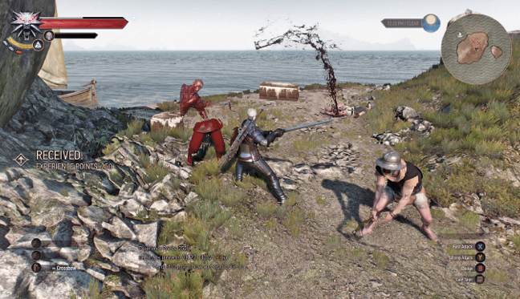
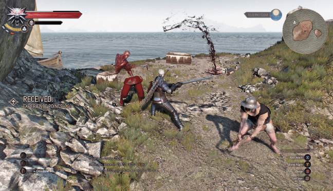

Finders Keepers Dipping Your Toes
{kind=link}
|
Locations: Giants’ Toes, Svorlag Characters: Shopkeeper Enemies: Dagr, Pirates |
Objectives
|
While exploring the northeastern coastline of Ard Skellig, be on the look-out for the rock formation known colloquially as Toes of the Giants. Explore the rugged coast and prepare for a modicum of combat thanks to roving bands of dagr. Slay around five on the beach, near a small campsite and two row boats.
 

{kind=link}
Now look north, and swim across to the largest “toe” of the island cluster. There’s a small shipwreck, and a band of four pirates skulking about the area, attempting to gather the ship’s loot.
Once they are defeated, the quest starts. Inspect the half-buried crate (it glows red if you use your Witcher Sense). It was hacked apart with an axe, and contains a solid sword you must take. Now inspect a second crate close by—this one has the emblem of Clan Brokvar on its lid.
|
Items: Common Item: Solid Skellige Sword |
End: Brokering with Clan Brokvar
Objectives
|
{kind=link}
Plot a course to the small isle of Spikeroog; it lies to the northwest of Arg Skellig. Sail to the village of Svorlag, and find the shopkeeper on the harbor, adjacent to the Notice Board.
Speak to the fellow here, letting him know about the shipwreck. He reckons it’s the Hemdall’s Wrath, which set out for the Continent a month back, and hopes you might happen across a sword among the wreckage. It’s ornate, and belonged to the captain. This matches the blade you found in the first crate. Hand it over for the reward, as the quest concludes.
{kind=link}
|
Items: Crowns |
The Witcher® is a trademark of CD PROJEKT S. A. The Witcher game © CD PROJEKT S. A. All rights reserved. The Witcher game is based on a novel by Andrzej Sapkowski. All other copyrights and trademarks are the property of their respective owners. Learn more at thewitcher.com.